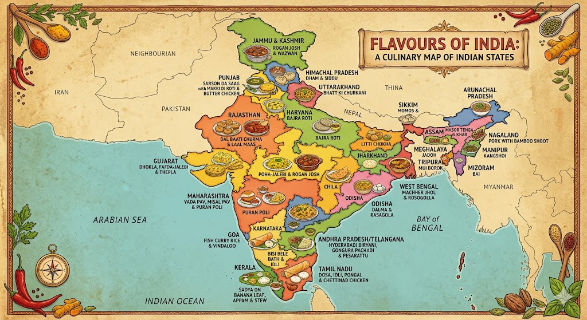

Welcome to odin-recipes, your digital guide to exploring India's rich culinary heritage through authentic, step-by-step home recipes.
Centered around our vibrant "Flavours of India" illustrated map, the platform visually guides you across the subcontinent—from classic Bihari Litti Choka to comforting southern Dosas—making it easy to discover, learn about, and cook the diverse regional dishes that define the country's unique food culture.
here are some recipes of India: